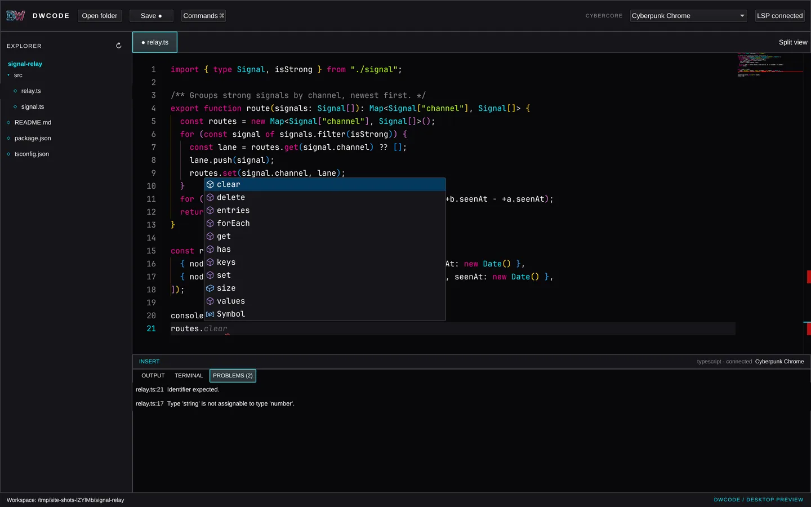
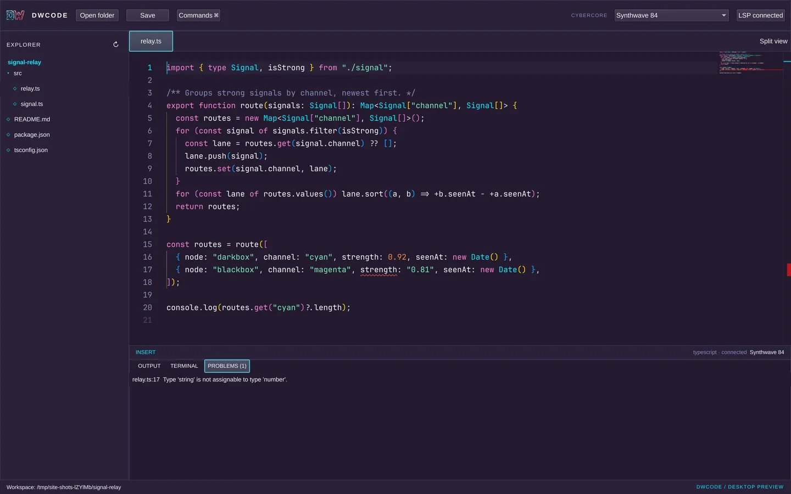

Real workspaces
Open any folder, browse it in the explorer and edit in tabs. Paths stay inside the workspace; symlinks that escape it are refused.
Cybercore / DWCode · desktop prototype
A keyboard-first desktop editor. A native Qt Quick shell wraps the Monaco editing surface, with real file saving, language servers, a workspace terminal and every Cybercore palette.

// what works today
Every feature below runs in the desktop prototype and is covered by its offscreen UI test suite, which clicks and types through the real window.
Open any folder, browse it in the explorer and edit in tabs. Paths stay inside the workspace; symlinks that escape it are refused.
Atomic writes on Ctrl+S. If the file changed on disk behind you, the save is blocked instead of overwriting someone else's work.
Diagnostics, completion, hover and go-to-definition over LSP. TypeScript ships with it; clangd, rust-analyzer and pyright are picked up from your PATH.
Run commands in the project, stream their output, type input to a running process, stop it. A command runner for now; full-screen TUIs come with the PTY.
The whole Cybercore palette library plus three DWCode originals. One choice recolours the shell and the editor together and is remembered.
Both panes share one document, so edits land in each instantly. Command palette on Ctrl+P, optional Helix-style modal mode.
Still to come: file watching, crash recovery, a New File command, a real PTY terminal, and extension packs loaded at runtime. DWCode uses Monaco, not VS Code, so VS Code extensions do not run in it.
// tour
These are window captures of the desktop build working on a small TypeScript project, not renders.

routes.// palettes
DWCode reads the canonical Cybercore theme files, so every palette in the family is here on day one. Pick one to see it on the same file.

Click any swatch to load it in the live demo below.
// live panel
This is the same Monaco bundle the desktop app loads, running in your browser on sample files.
Browser preview. Edits stay in this tab. Opening folders, saving, the terminal and language servers need the desktop app, because a web page can't touch your files or start processes.
// identity
Polished steel rails with a cyan D and a magenta W. Use the detailed artwork big and the simplified vector small.
All rights reserved by Cybercore Tech; the pack grants no redistribution licence.
// from source
Needs Qt 6 with Quick Controls and WebEngine Quick, qmake6, a C++17 compiler, Node.js and npm. On Arch / Omarchy: qt6-declarative qt6-webengine qt6-webchannel nodejs npm.
git clone https://github.com/cybercoretech/dwcode.git
cd dwcode
npm ci
./bin/build
./build/dwcode --workspace ~/your/projectDWCode is a prototype: there are no packaged releases yet, and it's tested on Linux only.